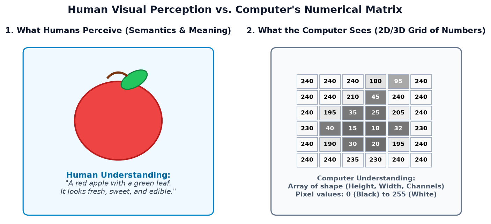
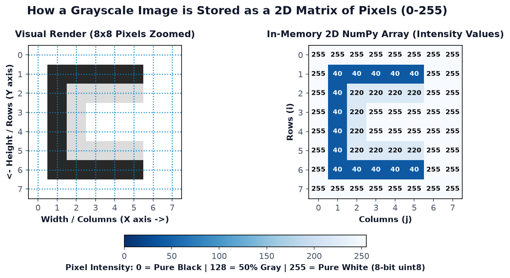
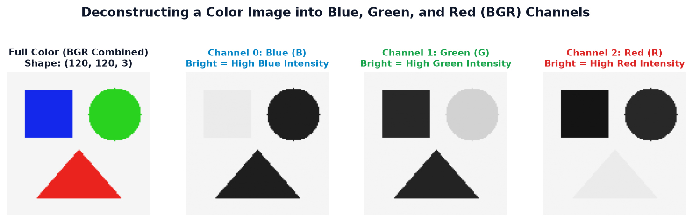
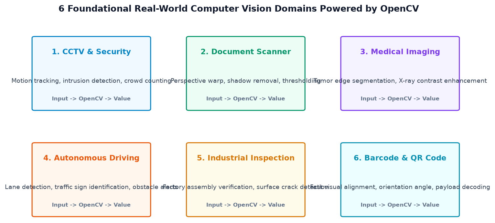
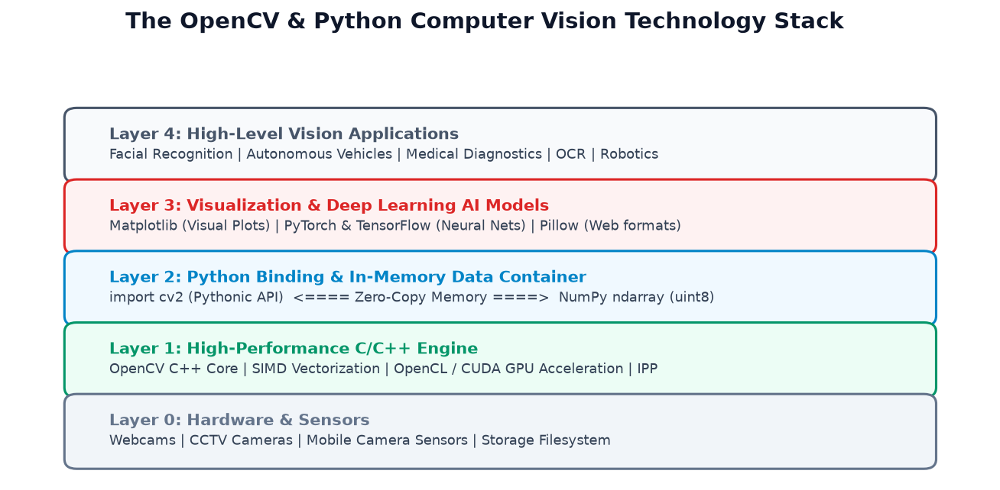
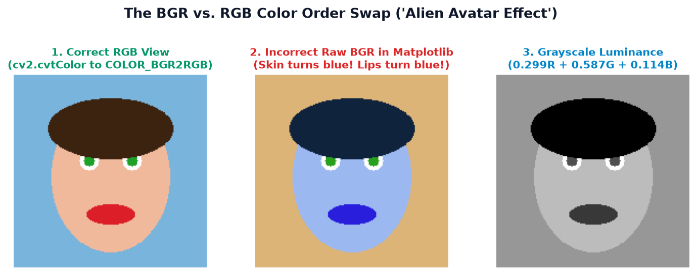
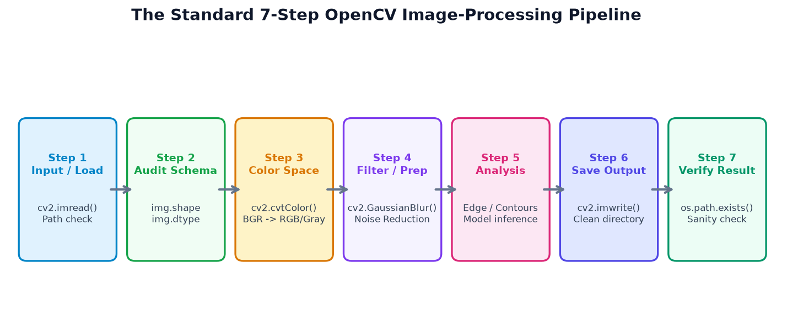
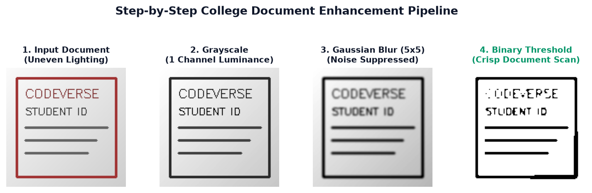
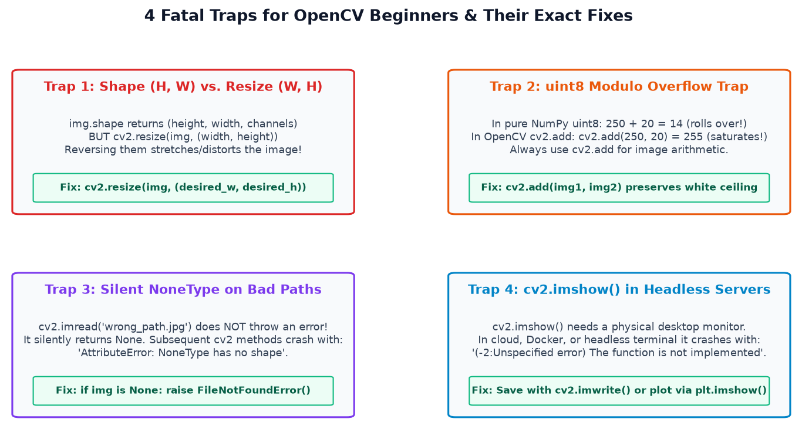

Aapka computer vision ka exciting safar yahan se shuru hota hai! Seekhiye OpenCV kya hai, computer images ko numbers ke roop me kaise dekhta hai, BGR vs RGB ka chakkar, aur likhiye apna pehla functional OpenCV program bina kisi confusion ke.
"Insan aankhon se dekh kar 1 millisecond me pehchan leta hai ki samne car hai ya ped... lekin ek computer camera se aane wali tasveeron ko kaise samajhta hai?"
Computer ke paas aankhein aur biological dimag nahi hota. Jab camera koi photo leta hai, toh computer ko sirf ek numbers ki rectangular grid (matrix) milti hai. In numbers ko padhna, process karna, aur unse meaningful information nikalna hi Computer Vision kehlata hai — aur is kaam ke liye duniya ki sabse popular aur powerful library hai OpenCV.
Full Form: OpenCV ka full form hai Open Source Computer Vision Library.
1. Beginner-Friendly Definition: OpenCV ek open-source software toolbox hai jo Python aur C++ programmers ko photos aur video streams par mathematical operations karke cheezein dhoondhne, colors badalne, blur karne aur shapes pehchanne ki taqat deta hai.
2. Technical Definition: OpenCV ek highly optimized, cross-platform library hai jisme 2,500 se zyada classic aur state-of-the-art computer vision and machine learning algorithms hain. Yeh CPU vectorization (SIMD) aur GPU acceleration (CUDA/OpenCL) ke saath real-time image and video processing facilitate karti hai.
Real-Life Analogy: Socho ki aapke paas ek digital canvas hai jisme 10 lakh chhote-chhote colored bulb lage hain. Agar aapko ek-ek bulb ko manually inspect karke uska color badalna pade, toh aapko ghanton lag jayenge. OpenCV ek automated smart remote control ki tarah hai jo ek single command me pure canvas ka contrast theek kar deta hai, edges ko highlight kar deta hai, ya face detect kar leta hai!
Open-Source Library vs. Standalone Application:
Bohot se beginners sochte hain ki OpenCV ek Photoshop ya VLC media player jaisa software hai jisme click-to-run buttons hote hain. Nahi! OpenCV ek programming library hai jise aap Python, C++, ya Java code ke andar import karte hain (import cv2) taaki aap apna khud ka custom application (jaise attendance system ya self-driving car module) bana sakein.
Computer Vision (CV) computer science aur artificial intelligence ki wo branch hai jo computers ko digital images aur videos se high-level understanding gain karne ki kshamta deti hai. Asan shabdon me: "Giving eyes and visual comprehension to computers."

Visual technology ke field me aksar beginners Image Processing, Computer Vision, aur Deep Learning ko aapas me mix kar dete hain. Niche di gayi table inka clear difference samjhati hai:
| Domain | Input | Output | Objective | Practical Example |
|---|---|---|---|---|
| Human Perception | Light rays (photons) | Conscious thought | Survive, navigate, recognize | Recognizing a friend's face instantly in sunlight. |
| Basic Image Processing | Digital Image | Transformed Image | Enhance quality, reduce noise | Converting a color photo to Grayscale or applying Gaussian Blur. |
| Computer Vision | Digital Image / Video | Structured Data (coordinates, labels) | Extract meaning, understand scene | Finding bounding box [x, y, w, h] of a car on a highway. |
| AI / Deep Learning | Images + Labeled Dataset | Trained Neural Model | Learn complex non-linear visual patterns | YOLO / SSD detecting 80 different object classes simultaneously. |
Har computer vision task ke liye AI model ya GPU ki zaroorat nahi hoti! Image resize karna, blur lagana, black-and-white thresholding karna, ya color filtering karna deterministic mathematical algorithms hote hain jo bina kisi training dataset ke instantly execute hote hain.
Computer ke memory me image ko samajhne ke liye in 10 fundamental concepts ko step-by-step master karna zaroori hai:
Kisi bhi digital image ka sabse chhota indivisible unit pixel kehlata hai. Har pixel ek particular location (row, column) par ek specific color ya intensity value store karta hai.
Image ki horizontal pixels ki sankhya ko Width aur vertical pixels ki sankhya ko Height kehte hain. Agar image 1920×1080 hai, toh iska matlab hai 1920 columns aur 1080 rows — total 2,073,600 pixels (approx 2 Megapixels).
Standard images 8-bit unsigned integers (uint8) use karti hain. 8 bits ka matlab 28 = 256 possible values:
• 0 = Pure Black (no light/energy)
• 255 = Pure White (maximum brightness)
• 1 to 254 = Intermediate gray ya color shades.
Grayscale image me har pixel sirf luminance (brightness) represent karta hai. Iska data shape hota hai (Height, Width) — yaani ek single 2D grid.
Rang-birangi images me har pixel ke color ko define karne ke liye 3 primary color components lagte hain. Isliye color image ka in-memory shape hota hai (Height, Width, 3).

A Tiny 3×3 Grayscale Matrix Demonstration:
Maan lijiye ek tiny 3×3 grayscale image hai. Memory me yeh simple 2D NumPy array ki tarah dikhegi:
import numpy as np
# Ek 3x3 diagonal white line black background par
tiny_image = np.array([
[255, 0, 0], # Row 0: Top-left white pixel, baaki black
[ 0, 255, 0], # Row 1: Center white pixel
[ 0, 0, 255] # Row 2: Bottom-right white pixel
], dtype=np.uint8)
print("Shape:", tiny_image.shape) # (3, 3) -> 3 Rows, 3 Columns
print("Data Type:", tiny_image.dtype) # uint8 (0 to 255 range)
Agar hum chahein, toh kya hum pure Python ke for loops likhkar pixels ko modify nahi kar sakte? Aaiye dekhte hain ki hume OpenCV ki zaroorat kyu padti hai:
Ek 1080p video stream me har second 30 frames aate hain. Har frame me 1920 × 1080 × 3 = 6,220,800 bytes hote hain. Pure Python me 62 lakh numbers par nested for-loops chalane par 1 frame process hone me 2 se 5 seconds lag jayenge! Live video crash ho jayegi (0.2 FPS!).
OpenCV is problem ko solve karta hai. OpenCV ka internal core highly optimized C/C++ code me likha gaya hai jo hardware SIMD instructions (Intel AVX, ARM NEON) aur GPU pipelines use karta hai. Jab aap Python me cv2.GaussianBlur() likhte hain, toh Python sirf ek lightweight wrapper hota hai — actual calculation C++ lightning speed par karti hai!
Core Image Processing Tasks Matrix:
| Operation | Why It Is Needed | Real-World Use Case | OpenCV Function | Type |
|---|---|---|---|---|
| Image Resizing | Input dimensions ko standardize karna taaki memory aur processing bache | Website profile picture upload, neural network inputs | cv2.resize() |
Traditional |
| Grayscale Conversion | Data volume ko 3 channels se 1 channel par reduce karna (66% memory bachat) | Face detection, OCR reading, edge detection preprocessing | cv2.cvtColor() |
Traditional |
| Blurring & Smoothing | High-frequency camera sensor noise aur graininess hatana | Barcode reading, background blur (portrait mode) | cv2.GaussianBlur() |
Traditional |
| Edge Detection | Object boundaries aur shape outlines ko isolate karna | Lane detection in self-driving cars, medical X-ray segmentation | cv2.Canny() |
Traditional |
| Thresholding | Grayscale image ko crisp pure Black & White (Binary) me convert karna | Document scanning, signature extraction, stamp verification | cv2.threshold() |
Traditional |
| Video Frame Extraction | Continuous camera feeds ko individual frame images me slice karna | CCTV security monitoring, sports movement analysis | cv2.VideoCapture() |
Traditional |
| Object Detection | Images me specific objects ki spatial bounding boxes detect karna | Traffic vehicle counting, pedestrian collision alert | cv2.dnn.readNet() |
Requires AI Model |

Aaiye 12 aisi real-world applications ko samjhein jo har engineering aur computer science student daily life me dekhta hai:

OpenCV akele kaam nahi karta; Python ecosystem me har library ka ek distinct aur indispensable role hai:
| Library | Primary Role in CV Pipeline | Color Channel Convention | Key Strength |
|---|---|---|---|
OpenCV (cv2) |
Image/video acquisition, transformations, geometric filtering | BGR (Blue, Green, Red) | C++ hardware-accelerated speed |
| NumPy | The core in-memory array container for pixel matrices | Agnostic (array of numbers) | Slicing, vector math, zero-copy buffer |
| Matplotlib | Educational plotting, histograms, side-by-side subplot reports | RGB (Red, Green, Blue) | Publication-quality figure generation |
| Pillow (PIL) | Lightweight format conversion, web image resizing, text watermarks | RGB | Simple high-level Pythonic imaging |
| PyTorch / TensorFlow | Training deep convolutional neural networks (CNNs, Vision Transformers) | RGB (Normalized 0.0 to 1.0) | Gradient backpropagation, GPU tensor compute |
Jab aap OpenCV me koi image load karte hain, OpenCV koi naya complicated custom object create nahi karta. Wo seedha ek standard NumPy ndarray return karta hai! Iska matlab aap standard NumPy slicing (jaise crop = img[50:150, 100:200]) se instant cropping aur matrix operations kar sakte hain.
OpenCV ko apne system me install karna bohot aasan hai. Python ka official package manager pip use kiya jata hai.
1. Standard Desktop Installation (Recommended for Beginners):
python -m pip install --upgrade pip
python -m pip install opencv-python numpy matplotlibDhyaan rahe: pip par package ka naam opencv-python hai, lekin Python script ke andar aap import cv2 likhte hain (kabhi bhi import opencv mat likhna, warna ModuleNotFoundError aayega!). "cv2" ka matlab OpenCV version 2 se shuru hone wala modernized C++ API wrapper hai.
2. What is opencv-python-headless?
Agar aap kisi cloud server (jaise AWS EC2, Google Cloud Run) ya Docker container par bina monitor ke code run kar rahe hain, toh wahan graphical window libraries (jaise X11 ya Qt) nahi hoti. Aise headless environments ke liye opencv-python-headless wheel banta hai.
Rule of Thumb: Normal laptop/desktop par sirf opencv-python install karein. Dono packages ko ek sath ek hi environment me install karne se library collision ho sakti hai.
3. Verifying Installation:
Terminal me single command chala kar check karein ki installation successful hua ya nahi:
python -c "import cv2; print('OpenCV Version:', cv2.__version__)"Expected Output: OpenCV Version: 4.13.0 (ya aapka installed 4.x version).
Hume kisi external image download karne ya internet connection par depend karne ki zaroorat nahi hai. Hum NumPy se ek synthetic colored canvas banayenge, uspar OpenCV se geometric shapes draw karenge, dimensions audit karenge, aur file save karenge.
import os
import cv2
import numpy as np
# 1. Print OpenCV version
print("Step 1: Running OpenCV Version:", cv2.__version__)
# 2. Create a blank 250x300 pixel color canvas (BGR format)
# Height = 250 rows, Width = 300 columns, Channels = 3
canvas = np.full((250, 300, 3), 245, dtype=np.uint8) # Light gray background
# 3. Draw a blue rectangle (in BGR: Blue=220, Green=50, Red=30)
# Top-left corner = (30, 30), Bottom-right corner = (270, 90)
cv2.rectangle(canvas, (30, 30), (270, 90), (220, 50, 30), thickness=-1)
# 4. Draw a bright green circle (in BGR: Blue=30, Green=200, Red=40)
# Center = (150, 165), Radius = 40, Filled (-1)
cv2.circle(canvas, (150, 165), 40, (30, 200, 40), thickness=-1)
# 5. Add text overlay
cv2.putText(canvas, "CodeVerse OpenCV", (45, 70),
cv2.FONT_HERSHEY_SIMPLEX, 0.7, (255, 255, 255), 2)
# 6. Audit Image Properties
h, w, c = canvas.shape
print(f"Step 2: Image Dimensions -> Height: {h}px, Width: {w}px, Channels: {c}")
print(f"Step 3: NumPy Array Shape: {canvas.shape}")
print(f"Step 4: Memory Data Type: {canvas.dtype}")
# 7. Save output to disk
output_folder = "my_opencv_outputs"
os.makedirs(output_folder, exist_ok=True)
output_path = os.path.join(output_folder, "first_program_result.png")
success = cv2.imwrite(output_path, canvas)
print("Step 5: File write success:", success)
# 8. Verify saved file exists and can be read back
if os.path.exists(output_path):
print(f"Step 6: Verified! Output saved at '{output_path}' ({os.path.getsize(output_path)} bytes)")
reloaded_img = cv2.imread(output_path)
print("Step 7: Verification readback shape:", reloaded_img.shape)Code Explanation Line-by-Line:
import cv2: OpenCV module ko Python script me load karta hai.np.full((250, 300, 3), 245, dtype=np.uint8): 250 rows aur 300 columns ka ek 3-channel array banata hai jisme har cell 245 (off-white) se initialized hai. Data type uint8 (0 se 255 unsigned integer) rakhna mandatory hai.cv2.rectangle() & cv2.circle(): Coordinates (X, Y) yaani (Column, Row) format me accept karte hain. thickness=-1 ka matlab shape ko solid color se fill karna hai.canvas.shape: (250, 300, 3) return karta hai — yaad rakhein NumPy me pehla number Height (Rows) aur doosra number Width (Columns) hota hai!cv2.imwrite(): In-memory matrix ko PNG/JPG compressed image file bana kar hard drive par save karta hai.Images ko disk se read karna aur process karke wapas save karna computer vision ka sabse common step hai. Lekin beginners aksar path errors aur silent failures me phas jaate hain.
Example A: Loading an Image with Mandatory None Check
import os
import cv2
image_path = "assets/sample_photo.png"
# Check 1: Does file exist physically?
if not os.path.exists(image_path):
print(f"Error: File '{image_path}' does not exist on disk!")
else:
# Read the image
img = cv2.imread(image_path)
# Check 2: Did OpenCV decode it successfully?
if img is None:
print("Error: File exists but OpenCV could not decode it (corrupted or unsupported format).")
else:
h, w, c = img.shape
print(f"Success! Image loaded: {w}x{h} with {c} channels.")
# Save a duplicate copy
cv2.imwrite("output_copy.png", img)
print("Saved copy successfully!")Example B: Programmatic Image Generation (No External Assets Required)
Aap mathematical formulas se bhi attractive visual patterns generate karke save kar sakte hain:
import os
import cv2
import numpy as np
# Create a smooth horizontal color gradient (256x512)
h, w = 256, 512
gradient = np.zeros((h, w, 3), dtype=np.uint8)
for col in range(w):
# Blue increases from left to right
b = int(255 * (col / w))
# Red decreases from left to right
r = int(255 * (1.0 - col / w))
# Green is peak in the middle
g = int(255 * np.sin(np.pi * (col / w)))
gradient[:, col] = [b, g, r] # BGR assignment
os.makedirs("output_gradients", exist_ok=True)
out_file = os.path.join("output_gradients", "smooth_color_gradient.png")
cv2.imwrite(out_file, gradient)
print(f"Generated and saved: {out_file} ({w}x{h} pixels)")Jab aap OpenCV se image load karke use Matplotlib ya kisi web viewer me display karte hain, toh insaan ka chehra laal ya gehunwa (wheatish) dikhne ke bajaye ekdam neela (Avatar alien jaisa) ban jata hai! Aisa kyu hota hai?

Kyu OpenCV BGR use karta hai? (Historical Context):
1999–2000 me jab Intel ne OpenCV develop karna shuru kiya tha, tab hardware camera manufacturers aur Windows OS Bitmap format (.BMP) internal memory me BGR (Blue-Green-Red) order use karte the. Efficiency ke liye OpenCV ne bhi BGR ko default rakha. Lekin standard digital media, web browsers, aur Matplotlib RGB use karte hain!
Color Space Conversion Formulas:
(B+G+R)/3 lene ke bajaye international standard luminance formula use hota hai:import cv2
import matplotlib.pyplot as plt
# 1. Read image (OpenCV loads in BGR)
img_bgr = cv2.imread("assets/sample_photo.png")
# 2. Convert BGR to RGB for Matplotlib visualization
img_rgb = cv2.cvtColor(img_bgr, cv2.COLOR_BGR2RGB)
# 3. Convert BGR to Grayscale for algorithmic analysis
img_gray = cv2.cvtColor(img_bgr, cv2.COLOR_BGR2GRAY)
print(f"BGR Shape: {img_bgr.shape}") # (H, W, 3)
print(f"RGB Shape: {img_rgb.shape}") # (H, W, 3)
print(f"Gray Shape: {img_gray.shape}") # (H, W) -> Notice 3rd dimension is gone!
# Display safely using Matplotlib
plt.figure(figsize=(9, 4))
plt.subplot(1, 2, 1)
plt.imshow(img_rgb)
plt.title("Correct RGB View")
plt.axis('off')
plt.subplot(1, 2, 2)
plt.imshow(img_gray, cmap='gray')
plt.title("Grayscale (Luminance)")
plt.axis('off')
plt.tight_layout()
plt.show()Real-world computer vision projects me code isolated lines me nahi, balki ek disciplined 7-Stage Pipeline me chalta hai:

Relatable Case Study: College Document Enhancement Demo
Maan lijiye aapne apne phone se college ID card ya class notes ki photo kheenchi. Phone camera ke karan uspe shadows aur graininess aayi hai. Hum use clean, readable scan me convert karenge:

import os
import cv2
import numpy as np
# Step 1: Input / Load
raw_doc = cv2.imread("coding/opencv/topic_1/assets/topic1_document_enhancement_demo.png")
if raw_doc is None:
# Create synthetic document if file missing
raw_doc = np.full((140, 140, 3), 220, dtype=np.uint8)
cv2.putText(raw_doc, "CODEVERSE", (20, 50), cv2.FONT_HERSHEY_SIMPLEX, 0.5, (40, 40, 120), 1)
# Step 2: Audit Dimensions
h, w, c = raw_doc.shape
print(f"Pipeline Audit: Input size is {w}x{h} with {c} channels.")
# Step 3: Color Space Conversion (BGR -> Grayscale)
gray_doc = cv2.cvtColor(raw_doc, cv2.COLOR_BGR2GRAY)
# Step 4: Filtering & Smoothing (Gaussian Blur with 5x5 kernel)
# Blur removes tiny salt-and-pepper camera noise
blurred_doc = cv2.GaussianBlur(gray_doc, (5, 5), sigmaX=0)
# Step 5: Analysis & Thresholding (Otsu's Binarization)
# Separates foreground text from background paper
_, binary_doc = cv2.threshold(blurred_doc, 0, 255, cv2.THRESH_BINARY + cv2.THRESH_OTSU)
# Step 6: Save Output
out_dir = "pipeline_results"
os.makedirs(out_dir, exist_ok=True)
out_path = os.path.join(out_dir, "clean_scanned_doc.png")
cv2.imwrite(out_path, binary_doc)
# Step 7: Verification
if os.path.exists(out_path):
print(f"Pipeline Complete! Output verified at: {out_path} ({os.path.getsize(out_path)} bytes)")Ek mature computer vision engineer banne ke liye aapko pata hona chahiye ki OpenCV kahan best hai aur kahan iski limits hain:
Key Advantages:
Realistic Limitations:
Misconception 1: "OpenCV and AI are the exact same thing."
Fact: OpenCV ek computer vision & image processing library hai. Image crop karna ya blur lagana koi AI nahi hai; yeh pure geometry aur calculus hai!
Misconception 2: "OpenCV install karte hi wo automatically har object pehchan lega."
Fact: OpenCV object recognition tabhi karta hai jab aap use pre-trained deep learning weights (jaise YOLO ya MobileNet) provide karein.
Misconception 3: "Higher resolution camera se hamesha behtar computer vision result milta hai."
Fact: High resolution (jaise 4K) se calculation 16x heavy ho jati hai lekin edge detection accuracy me sirf 1-2% farak padta hai. Industry me real-time CV ke liye 640×480 ya 720p prefer kiya jata hai.
Misconception 4: "Har OpenCV project ke liye training dataset chahiye hota hai."
Fact: Machine learning ko dataset chahiye hota hai. Basic OpenCV algorithms (filtering, barcode scanning, motion detection) bina kisi training dataset ke directly chalte hain.
Misconception 5: "OpenCV chalane ke liye expensive NVIDIA GPU hona zaroori hai."
Fact: OpenCV standard laptop CPU par bohot tezi se chalta hai. GPU sirf tab zaroori hota hai jab aap multiple 4K cameras ya heavy deep learning networks run karte hain.

Aaiye dekhte hain wo 6 bugs jo har beginner face karta hai aur unka exact solution kya hai:
| Bug / Error Message | Root Cause | Symptom | Exact Fix / Code Snippet |
|---|---|---|---|
AttributeError: 'NoneType' object has no attribute 'shape' |
cv2.imread() ko wrong file path ya galat extension diya gaya. OpenCV exception throw nahi karta, chup-chap None return karta hai! |
Program next line par crash hota hai | |
| Stretched / Distorted Resized Image | NumPy img.shape gives (Height, Width), lekin cv2.resize() expects (Width, Height)! |
Vertical image horizontal stretch ho jati hai | |
| Strange White/Black Spots After Math | NumPy uint8 modulo rollover: 250 + 20 = 14! (Max 255 ke baad 0 se shuru hota hai). |
Bright spots achanak dark black ho jaate hain | Use cv2.add(a, b) jo 255 par saturate (clamp) karta hai. |
cv2.imwrite() returns False |
Jis destination folder me aap image save kar rahe hain, wo folder disk par exist nahi karta. | File silently save nahi hoti | |
error: (-2:Unspecified error) The function is not implemented (cv2.imshow) |
Headless server (AWS, Docker, Jupyter Notebook, terminal) me GUI window system nahi hota. | cv2.imshow() crashes immediately |
Save file via cv2.imwrite() ya notebook me plt.imshow() use karein. |
| Blue Face / Inverted Colors | OpenCV image ko BGR me load karta hai, lekin Matplotlib use RGB samajh kar render karta hai. | Insaan Avatar jaisa neela dikhta hai | rgb = cv2.cvtColor(bgr, cv2.COLOR_BGR2RGB) |
In 3 practical beginner projects ko implement karke apne concepts ko solidify karein:
Objective: Ek reusable Python utility function banayein jo kisi bhi image ka complete metadata report print kare (Dimensions, Aspect Ratio, Total Pixels, Memory Size, Intensity Min/Max/Mean).
Complete Implementation:
import os
import cv2
def inspect_image(image_path):
if not os.path.exists(image_path):
return {"error": f"File not found: {image_path}"}
img = cv2.imread(image_path)
if img is None:
return {"error": "Invalid or unreadable image file"}
h, w = img.shape[:2]
c = img.shape[2] if img.ndim == 3 else 1
file_kb = round(os.path.getsize(image_path) / 1024, 2)
aspect_ratio = round(w / h, 2)
return {
"filename": os.path.basename(image_path),
"width_px": w,
"height_px": h,
"channels": c,
"aspect_ratio": aspect_ratio,
"total_pixels": h * w,
"dtype": str(img.dtype),
"file_size_kb": file_kb,
"min_intensity": int(img.min()),
"max_intensity": int(img.max()),
"mean_intensity": round(float(img.mean()), 2)
}
# Test the inspector
result = inspect_image("coding/opencv/topic_1/assets/topic1_cv_vs_human_perception.png")
for k, v in result.items():
print(f"{k.replace('_', ' ').title():<18}: {v}")Extension Challenge: Agar aspect ratio 1.0 se bada ho toh output me Orientation: Landscape, 1.0 se chhota ho toh Portrait, aur 1.0 ho toh Square display karein.
Objective: Ek function banayein jo ek single input image se ek unified 2×2 comparison grid banaye jisme 4 views hon: [Original, Grayscale, Gaussian Blurred, Inverted (Negative)].
import cv2
import numpy as np
def generate_multiview_dashboard(input_path, output_path):
img = cv2.imread(input_path)
if img is None:
raise ValueError(f"Could not load '{input_path}'")
# 1. Grayscale (and convert back to 3-channel for stacking)
gray = cv2.cvtColor(img, cv2.COLOR_BGR2GRAY)
gray_3c = cv2.cvtColor(gray, cv2.COLOR_GRAY2BGR)
# 2. Gaussian Blur (noise reduction / smoothing)
blurred = cv2.GaussianBlur(img, (15, 15), 0)
# 3. Inverted / Negative
inverted = cv2.bitwise_not(img)
# Stack into 2x2 grid using NumPy
top_row = np.hstack([img, gray_3c])
bottom_row = np.hstack([blurred, inverted])
dashboard = np.vstack([top_row, bottom_row])
cv2.imwrite(output_path, dashboard)
print(f"Multi-View Dashboard saved successfully at: {output_path}")
# Run function
generate_multiview_dashboard("coding/opencv/topic_1/assets/topic1_document_enhancement_demo.png",
"multiview_output.png")Objective: Kisee scanned assignment ya student id card image ko automatic Otsu thresholding se clean karke readable black-and-white scan banayein.
import cv2
def clean_document_for_ocr(doc_image_path, clean_output_path):
# 1. Load document
doc = cv2.imread(doc_image_path)
if doc is None:
return False
# 2. Grayscale conversion
gray = cv2.cvtColor(doc, cv2.COLOR_BGR2GRAY)
# 3. Slight median blur to eliminate salt-and-pepper grain
denoised = cv2.medianBlur(gray, 3)
# 4. Otsu's automatic thresholding (calculates optimal threshold cutoff)
thresh_val, binary_doc = cv2.threshold(denoised, 0, 255, cv2.THRESH_BINARY + cv2.THRESH_OTSU)
print(f"Optimal calculated threshold value: {thresh_val}")
# 5. Save output
cv2.imwrite(clean_output_path, binary_doc)
return True
clean_document_for_ocr("coding/opencv/topic_1/assets/topic1_document_enhancement_demo.png",
"cleaned_student_doc.png")Aapne Topic 1 ke sabhi fundamental concepts ko study kar liya hai! Ab in 12 Multiple Choice Questions, 6 Coding Challenges, 5 Short Questions, aur 4 Debugging Exercises se apni understanding test karein.
None return karta hai, isliye defensive null-check lagana zaroori hota hai.
(1080, 1920, 3).
cv2.cvtColor(img, cv2.COLOR_BGR2RGB).
cv2.add() use karein jo 255 par saturate karta hai.
cv2.imwrite() se save karna chahiye.
cv2.resize() Cartesian coordinate system (Width, Height) follow karta hai, jabki img.shape (Height, Width) return karta hai.
opencv-python hai.
cv2.add() saturated arithmetic karta hai: 250 + 20 = 255 (maximum ceiling par clamp ho jata hai), jo digital images ke liye mathematically correct behavior hai.
opencv-python desktop environments ke liye hai jisme GUI window libraries (imshow, namedWindow, waitKey) included hoti hain. opencv-python-headless cloud servers aur Docker containers ke liye hai jahan physical monitor nahi hota aur GUI libraries ki dependency ko eliminate karke binary size chhota rakha jata hai.
# Buggy Code:
img = cv2.imread("photo.jpg") # Shape: (800, 1200, 3) -> Height=800, Width=1200
# Goal: Make width=400, height=200
resized = cv2.resize(img, (200, 400)) # Why is it distorted?cv2.resize() argument format (Width, Height) accept karta hai. Coder ne (Height, Width) pass kar diya. Correct code: cv2.resize(img, (400, 200)).
# Buggy Code:
img = np.zeros((100, 100, 3), dtype=np.uint8)
status = cv2.imwrite("reports/daily_scans/result.png", img)
print("Saved:", status) # Prints: Saved: False! Why?reports/daily_scans directory hard drive par exist nahi karti. cv2.imwrite() automatically parent directories create nahi karta. Solution: Save karne se pehle os.makedirs("reports/daily_scans", exist_ok=True) call karein.
# Buggy Code:
import cv2, matplotlib.pyplot as plt
img = cv2.imread("selfie.jpg")
plt.imshow(img) # Face turns blue like an avatar!
plt.show()plt.imshow(cv2.cvtColor(img, cv2.COLOR_BGR2RGB)).
# Buggy Code:
img = cv2.imread("C:/data/images/receipt.JPG")
print(img.shape) # AttributeError: 'NoneType' object has no attribute 'shape'cv2.imread() ne None return kiya. Fix: Hamesha defensive check lagayein: if img is None: raise FileNotFoundError("Invalid path").
Aapne computer vision ke core building blocks — pixels, color spaces (BGR/RGB), dimensions, NumPy integration, image reading/writing, aur safe production workflows ko thoroughly master kar liya hai. Ab aap Topic 2: OpenCV Installation & Python Setup aur Topic 3: Reading, Displaying & Saving Images me deep dive karne ke liye 100% prepared hain!